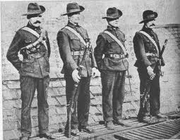

About the 1916 Easter Rising: A Brief Overview
The Easter Rising was an insurrection, mostly in Dublin city, that lasted from April 24th until April 30th 1916.
The insurgents in Dublin amounted to 1,200 men and women from the nationalist militia the Irish Volunteers, the socialist trade union group Irish Citizen Army and the women’s group, Cumman na mBan.
The Irish Volunteers had been founded in 1913 in response to the blocking of Home Rule, or self government for Ireland by the Ulster Volunteers. The Citizen Army (with around 300 members) was formed during the Dublin Lockout of 1913 to protect strikers from the police. James Connolly afterwards directed it towards pursuit of an Irish socialist republic.
The Volunteers split after the outbreak of the First World War into the National Volunteers and the Irish Volunteers.
The National Volunteers, over 120,000 strong, led by Irish Parliamentary Party leader John Redmond, were pledged to support the British war effort and over 30,000 of them joined the British Army. The remaining 13,000 Irish Volunteers, led by Eoin MacNeill, were committed to keep their organisation intact and in Ireland until Home Rule was passed.

The Rising was planned in secret by seven men, mostly of the Irish Republican Brotherhood or IRB, who had formed a “Military Council” to this end just after the outbreak of the First World War. They were, Tom Clarke, Sean McDermott, Patrick Pearse, Thomas MacDonagh, Joseph Plunkett, James Connolly and Eamon Ceannt.
Their plans were not known to the membership of the Volunteers at large or to the leaders of the IRB and Volunteers, Dennis McCullough, Bulmer Hobson and Eoin MacNeill.
They had arranged with the Germans for a large importation of arms to be delivered on Good Friday, April 21st, but this shipment was discovered by the British off Kerry and its cargo lost.
At the last minute, the plans for the Rising were revealed to Eoin MacNeill who tried to call off the rebellion by issuing a “countermanding order”, but actually just postponed the outbreak from Easter Sunday to the next day, Monday.
The insurgents proclaimed an Irish Republic with Pearse as President and Connolly as commander in chief. They occupied positions around Dublin at the General Post Office (GPO), the Four Courts, the South Dublin Union, Boland’s Mill, Stephen’s Green and Jacobs’ biscuit factory.
Over the following week, the British deployed over 16,000 troops, artillery and naval gunboat into the city to suppress the rising. In the week’s fighting, about 450 people were killed and over 2,000 wounded.
The rebels’ headquarters at the GPO was bombarded into surrender, which Patrick Pearse ordered on Saturday, 29th April. However the fiercest fighting took place elsewhere, at Mount Street Bridge, South Dublin Union and North King Street.
There were also risings in county Galway, Enniscorthy in Wexford and Ashbourne in county Meath, but apart from an action at Ashbourne that killed 11 police, these caused little bloodshed.
Sixteen of the rebel leaders were executed, 15 in a two week period after they had surrendered and one, Roger Casement, in August.
Over 3,000 people were arrested after the rebellion and over 1,400 imprisoned. The Rising was not widely supported among the Dublin public and was condemned by the Irish Parliamentary Party and much of nationalist as well as unionist opinion. However, combined with other factors, such as the continued postponement of Home Rule, the growing casualties of the First World War and the threat of conscription, the Rising and its repression helped to increase the strength of the radical nationalists in Sinn Fein.
This party, which had not participated in the rebellion, was adopted as a vehicle by the veterans of the Rising and pledged to withdraw from the Westminster Parliament and set up an Irish one.
Sinn Fein went on to win three by-elections in 1917 and a general election in 1918, leading to their proclamation of an Irish Republic in January 1919 and the start of the Irish War of Independence.